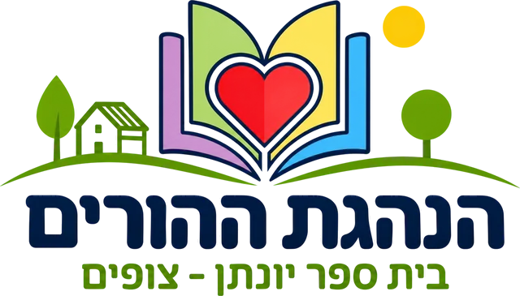

<title>חדר ועדת הטלפונים</title>
<meta name="claude:viewport-fit-sides" content="cover">
<link rel="preconnect" href="https://fonts.googleapis.com">
<link rel="preconnect" href="https://fonts.gstatic.com" crossorigin>
<link rel="stylesheet" href="https://fonts.googleapis.com/css2?family=Secular+One&family=Assistant:wght@400;600;700;800&family=Playpen+Sans+Hebrew:wght@500;700;800&family=Rubik:wght@400;500;700;800;900&family=Fredoka:wght@500;600;700&display=swap">
<style>
/* Layout: one reading column like a committee folder. The current stage is open on top, earlier stages fold below. Sample video frames sit in a horizontal row per direction. */
:root {
  --paper: #F5F6FA;
  --card: #FFFFFF;
  --ink: #1A2038;
  --muted: #5B627A;
  --line: #DCE0EC;
  --accent: #2C47C7;
  --accent-soft: #E6EBFF;
  --marker: #FFD43B;
  --marker-ink: #1A2038;
  --mark-bg: #FFD43B;
  --pact: #0F8A6A;
  --pact-soft: #DDF3EC;
  --done: #0F8A6A;
  --font-display: "Secular One", "Assistant", "Arial Hebrew", Arial, sans-serif;
  --font-body: "Assistant", "Arial Hebrew", Arial, sans-serif;

  /* brand colors sampled from the parents' leadership logo (fixed, theme independent) */
  --b-navy: #001A3F;
  --b-green: #699F03;
  --b-leaf: #B5D96E;
  --b-sun: #FECC0C;
  --b-page: #FEE55A;
  --b-heart: #F61621;
  --b-purple: #CC90CE;
  --b-sky: #3ABCFE;
  --b-white: #FFFFFF;
}
@media (prefers-color-scheme: dark) {
  :root:not([data-theme="light"]) {
    --paper: #11152A; --card: #1A1F38; --ink: #E9ECF7; --muted: #A2A9C2; --line: #2C3354;
    --accent: #9DB0FF; --accent-soft: #252E5A; --marker: #F5C933; --marker-ink: #11152A; --mark-bg: #6E5612;
    --pact: #4FD1AB; --pact-soft: #143A33; --done: #4FD1AB; color-scheme: dark;
  }
}
:root[data-theme="dark"] {
  --paper: #11152A; --card: #1A1F38; --ink: #E9ECF7; --muted: #A2A9C2; --line: #2C3354;
  --accent: #9DB0FF; --accent-soft: #252E5A; --marker: #F5C933; --marker-ink: #11152A; --mark-bg: #6E5612;
  --pact: #4FD1AB; --pact-soft: #143A33; --done: #4FD1AB; color-scheme: dark;
}
* { box-sizing: border-box; }
body { background: var(--paper); color: var(--ink); font-family: var(--font-body); font-size: 17px; line-height: 1.6; }
.wrap {
  max-width: 980px; margin: 0 auto;
  padding-block: 28px 64px;
  padding-left: max(16px, env(safe-area-inset-left, 0px));
  padding-right: max(16px, env(safe-area-inset-right, 0px));
  display: flex; flex-direction: column; gap: 44px;
}
.col { max-width: 760px; display: flex; flex-direction: column; gap: 16px; }
h1, h2, h3 { font-family: var(--font-display); font-weight: 400; line-height: 1.2; text-wrap: balance; margin: 0; }
h1 { font-size: clamp(30px, 6vw, 44px); }
h2 { font-size: 26px; }
h3 { font-size: 21px; }
p { margin: 0; }
.eyebrow { font-weight: 700; font-size: 14px; letter-spacing: .04em; color: var(--muted); font-family: var(--font-body); }
.mark { background: linear-gradient(transparent 55%, var(--mark-bg) 55%); color: inherit; padding: 0 2px; }
section { display: flex; flex-direction: column; gap: 16px; }
.lead { font-size: 19px; max-width: 62ch; }
.muted { color: var(--muted); }
a { color: var(--accent); }
header { display: flex; flex-direction: column; gap: 12px; }
.from { font-size: 15px; color: var(--muted); }

/* stage strip */
.stages { list-style: none; margin: 0; padding: 0; display: grid; grid-template-columns: repeat(4, minmax(0, 1fr)); gap: 8px; max-width: 760px; }
.stages li { border: 1px solid var(--line); border-radius: 10px; padding: 10px 12px; background: var(--card); display: flex; flex-direction: column; gap: 2px; min-width: 0; }
.stages .n { font-weight: 800; font-size: 13px; color: var(--muted); font-variant-numeric: tabular-nums; }
.stages .t { font-weight: 600; font-size: 15px; line-height: 1.3; }
.stages li.now { border-color: var(--accent); background: var(--accent-soft); }
.stages li.now .n { color: var(--accent); }
.stages li.done .n { color: var(--done); }
@media (max-width: 560px) { .stages { grid-template-columns: repeat(2, minmax(0, 1fr)); } }

/* decided */
.decided { display: grid; grid-template-columns: repeat(auto-fit, minmax(140px, 1fr)); gap: 10px; max-width: 760px; }
.decided div { background: var(--card); border: 1px solid var(--line); border-radius: 12px; padding: 12px 14px; display: flex; flex-direction: column; gap: 2px; min-width: 0; }
.decided span { font-size: 14px; color: var(--muted); }
.decided b { font-size: 18px; line-height: 1.3; }
.logo-chip { background: #FFFFFF; border-radius: 8px; padding: 6px; display: flex; justify-content: center; }
.logo-chip img { height: 44px; width: auto; }

/* shared rules */
.shared { display: grid; grid-template-columns: repeat(2, minmax(0, 1fr)); gap: 14px; max-width: 760px; }
.shared div { background: var(--card); border: 1px solid var(--line); border-radius: 12px; padding: 14px 16px; display: flex; flex-direction: column; gap: 4px; min-width: 0; }
.shared b { font-size: 17px; }
.shared span { font-size: 15px; color: var(--muted); line-height: 1.5; }
@media (max-width: 560px) { .shared { grid-template-columns: 1fr; } }

/* direction blocks */
.dir { background: var(--card); border: 1px solid var(--line); border-radius: 18px; padding: 22px; display: flex; flex-direction: column; gap: 18px; }
.dir.rec { border: 2px solid var(--accent); }
.dir-head { display: flex; flex-wrap: wrap; align-items: baseline; gap: 6px 14px; }
.dir-head .letter { font-family: var(--font-display); font-size: 34px; line-height: 1; color: var(--accent); }
.badge { font-size: 13px; font-weight: 800; padding: 3px 10px; border-radius: 999px; background: var(--accent); color: var(--card); }
.dir-feel { font-size: 18px; max-width: 62ch; }
.frames { display: flex; gap: 14px; overflow-x: auto; padding-bottom: 6px; scroll-snap-type: x mandatory; }
.frames figure { margin: 0; flex: 1 1 0; min-width: 210px; max-width: 300px; display: flex; flex-direction: column; gap: 6px; scroll-snap-align: start; }
.frames figcaption { font-size: 14px; color: var(--muted); }
.specs { display: grid; grid-template-columns: repeat(3, minmax(0, 1fr)); gap: 16px; }
.specs > div { display: flex; flex-direction: column; gap: 6px; min-width: 0; }
.specs h4 { margin: 0; font-size: 14px; font-weight: 800; color: var(--muted); letter-spacing: .03em; }
.specs p { font-size: 15px; line-height: 1.5; }
.sw-row { display: flex; flex-wrap: wrap; gap: 6px; }
.sw-row i { width: 26px; height: 26px; border-radius: 50%; border: 1px solid var(--line); display: block; }
.pros { display: grid; grid-template-columns: repeat(2, minmax(0, 1fr)); gap: 10px; }
.pros div { font-size: 15px; line-height: 1.5; padding: 10px 12px; border-radius: 10px; background: var(--paper); }
.pros b { display: block; font-size: 14px; }
@media (max-width: 700px) { .specs { grid-template-columns: 1fr; } .pros { grid-template-columns: 1fr; } }

/* ====== VIDEO FRAMES (9:16). Everything inside scales with the frame width via cqw. ====== */
.frame { position: relative; width: 100%; aspect-ratio: 9 / 16; container-type: inline-size; overflow: hidden; border-radius: 14px; box-shadow: 0 1px 0 var(--line), 0 6px 18px rgba(0, 10, 40, .12); isolation: isolate; }
.frame .in { position: absolute; inset: 0; padding: 9cqw 8cqw; display: flex; flex-direction: column; gap: 4cqw; }
.frame .src { font-family: "Rubik", sans-serif; font-size: 3.4cqw; direction: ltr; text-align: right; unicode-bidi: plaintext; }
.frame .note { position: absolute; bottom: 3cqw; left: 0; right: 0; text-align: center; font-family: "Rubik", sans-serif; font-size: 2.8cqw; opacity: .7; }
.dots { display: grid; grid-template-columns: repeat(10, 1fr); gap: 1.6cqw; direction: ltr; }
.dots i { aspect-ratio: 1; border-radius: 50%; display: block; }
.legend-v { display: flex; flex-direction: column; gap: 1.6cqw; font-size: 3.6cqw; }
.legend-v span { display: flex; align-items: center; gap: 2cqw; }
.legend-v i { width: 3.4cqw; height: 3.4cqw; border-radius: 50%; display: inline-block; flex: none; }
.f-logo { width: 78cqw; height: auto; }

/* A · notebook */
.A { background: #FCFCFA; color: var(--b-navy); }
.A > .in { background-color: #FCFCFA;
  background-image: linear-gradient(90deg, transparent calc(100% - 13cqw), #F2A7AB calc(100% - 13cqw), #F2A7AB calc(100% - 12.6cqw), transparent calc(100% - 12.6cqw)),
    linear-gradient(#DCE5F3 1px, transparent 1px), linear-gradient(90deg, #DCE5F3 1px, transparent 1px);
  background-size: 100% 100%, 6cqw 6cqw, 6cqw 6cqw; }
.A .in { padding-right: 18cqw; }
.A .hand { font-family: "Playpen Sans Hebrew", "Fredoka", sans-serif; }
.A .tag { align-self: flex-start; font-family: "Playpen Sans Hebrew", sans-serif; font-weight: 700; font-size: 4.4cqw; padding: 1cqw 4cqw; border: .7cqw solid var(--b-heart); border-radius: 50% 46% 52% 44% / 60% 50% 55% 45%; color: var(--b-heart); transform: rotate(-3deg); }
.A .hook { font-family: "Playpen Sans Hebrew", sans-serif; font-weight: 800; font-size: 10.4cqw; line-height: 1.25; }
.A .hook u { text-decoration: none; background: linear-gradient(transparent 62%, var(--b-page) 62%, var(--b-page) 92%, transparent 92%); }
.A .big { font-family: "Rubik", sans-serif; font-weight: 800; font-size: 30cqw; line-height: .9; color: var(--b-navy); }
.A .label { font-family: "Playpen Sans Hebrew", sans-serif; font-weight: 700; font-size: 5.6cqw; line-height: 1.35; }
.A .dots i { border: .55cqw solid #8C9AB6; }
.A .dots i.on { background: var(--b-heart); border-color: var(--b-heart); }
.A .title { font-family: "Playpen Sans Hebrew", sans-serif; font-weight: 800; font-size: 13cqw; line-height: 1.1; text-align: center; }
.A .title span { display: inline-block; padding-bottom: 1cqw; background: linear-gradient(transparent 70%, var(--b-leaf) 70%, var(--b-leaf) 94%, transparent 94%); }

/* B · bold type */
.B { background: var(--b-navy); color: var(--b-white); }
.B .kick { font-family: "Rubik", sans-serif; font-weight: 700; font-size: 4.2cqw; color: var(--b-sun); letter-spacing: .02em; }
.B .hook { font-family: "Rubik", sans-serif; font-weight: 900; font-size: 15.5cqw; line-height: .98; letter-spacing: -.01em; }
.B .hook .y { color: var(--b-sun); }
.B .hook .s { color: var(--b-sky); }
.B .big { font-family: "Rubik", sans-serif; font-weight: 900; font-size: 38cqw; line-height: .85; color: var(--b-sun); }
.B .label { font-family: "Rubik", sans-serif; font-weight: 700; font-size: 6cqw; line-height: 1.25; }
.B .dots i { background: #3A5288; }
.B .dots i.on { background: var(--b-sun); }
.B .src { color: #9DB0D6; }
.B .plate { background: var(--b-white); border-radius: 5cqw; padding: 6cqw 5cqw; display: flex; justify-content: center; }
.B .title { font-family: "Rubik", sans-serif; font-weight: 900; font-size: 17cqw; line-height: .95; color: var(--b-sun); }

/* C · the yard */
.C { color: var(--b-navy); background: linear-gradient(#BFE9FF, #EEF9FF 70%); }
.C.night { color: var(--b-white); background: linear-gradient(#071A3D, #173A75); }
.C .scene { position: absolute; inset: 0; z-index: -1; }
.C .hill1 { position: absolute; left: -30cqw; right: 20cqw; bottom: -38cqw; height: 70cqw; border-radius: 50%; background: var(--b-green); }
.C .hill2 { position: absolute; left: 10cqw; right: -40cqw; bottom: -46cqw; height: 74cqw; border-radius: 50%; background: var(--b-leaf); }
.C .low .hill1 { bottom: -58cqw; }
.C .low .hill2 { bottom: -62cqw; }
.C.night .hill1 { background: #2F5410; }
.C.night .hill2 { background: #45741A; }
.C .sun { position: absolute; width: 22cqw; height: 22cqw; border-radius: 50%; background: var(--b-sun); left: 9cqw; top: 9cqw; }
.C .moon { position: absolute; width: 18cqw; height: 18cqw; border-radius: 50%; left: 14cqw; top: 74cqw; box-shadow: -4cqw 3cqw 0 0 var(--b-page); }
.C .star { position: absolute; width: 1.4cqw; height: 1.4cqw; border-radius: 50%; background: #FFFFFF; opacity: .8; }
.C .house { position: absolute; right: 14cqw; bottom: 22cqw; width: 34cqw; height: 26cqw; background: #0E254D; border-radius: 1.5cqw; }
.C .house::before { content: ""; position: absolute; left: -4cqw; right: -4cqw; top: -15cqw; height: 16cqw; background: #0E254D; clip-path: polygon(50% 0, 100% 100%, 0 100%); }
.C .window { position: absolute; left: 5cqw; top: 6cqw; width: 11cqw; height: 9cqw; border-radius: 1cqw; background: var(--b-sky); box-shadow: 0 0 6cqw 2cqw rgba(58, 188, 254, .65); animation: flicker 2.6s ease-in-out infinite; }
.C .window.warm { left: auto; right: 5cqw; background: #2A3F66; box-shadow: none; animation: none; }
@keyframes flicker { 0%, 100% { opacity: 1; } 45% { opacity: .78; } 55% { opacity: .95; } }
.C .kick { font-family: "Fredoka", sans-serif; font-weight: 600; font-size: 4.6cqw; align-self: flex-start; padding: .8cqw 3.4cqw; border-radius: 99px; background: rgba(255,255,255,.16); }
.C .hook { font-family: "Fredoka", sans-serif; font-weight: 700; font-size: 11.6cqw; line-height: 1.12; }
.C .hook .y { color: var(--b-sun); }
.C .big { font-family: "Fredoka", sans-serif; font-weight: 700; font-size: 28cqw; line-height: .9; }
.C .label { font-family: "Fredoka", sans-serif; font-weight: 600; font-size: 5.8cqw; line-height: 1.3; }
.C .dots { gap: 1.1cqw; padding-inline: 4cqw; }
.C .legend-v { flex-direction: row; flex-wrap: wrap; gap: 1cqw 5cqw; }
.C .dots i { background: var(--b-green); }
.C .dots i.on { background: var(--b-navy); }
.C .title { font-family: "Fredoka", sans-serif; font-weight: 700; font-size: 14cqw; line-height: 1.02; text-align: center; }

/* motion: every element rests in its final, visible state; the animation only plays on load */
@media (prefers-reduced-motion: no-preference) {
  .frame .pop { animation: pop .7s cubic-bezier(.2, .9, .3, 1.3) both; }
  .frame .pop.d1 { animation-delay: .15s; } .frame .pop.d2 { animation-delay: .3s; } .frame .pop.d3 { animation-delay: .45s; } .frame .pop.d4 { animation-delay: .6s; }
  .dots i.on { animation: dotin .4s ease-out both; animation-delay: calc(var(--k) * 18ms + .4s); }
}
@keyframes pop { from { transform: translateY(6cqw) scale(.96); } to { transform: none; } }
@keyframes dotin { from { transform: scale(.4); } to { transform: none; } }

/* pact + stage-1 archive */
details.archive { background: var(--card); border: 1px solid var(--line); border-radius: 14px; padding: 4px 18px; max-width: 760px; }
details.archive summary { cursor: pointer; padding: 12px 0; font-weight: 800; font-size: 17px; }
details.archive summary span { color: var(--done); }
details.archive[open] { padding-bottom: 18px; }
details.archive .col { gap: 14px; }
.eps { list-style: none; margin: 0; padding: 0; display: flex; flex-direction: column; border-top: 1px solid var(--line); }
.eps li { display: grid; grid-template-columns: 36px minmax(0, 1fr); gap: 2px 12px; padding: 10px 0; border-bottom: 1px solid var(--line); }
.eps .num { font-family: var(--font-display); font-size: 22px; line-height: 1.1; color: var(--accent); grid-row: span 2; }
.eps .topic { font-weight: 800; }
.eps .src { font-size: 14px; color: var(--muted); direction: ltr; text-align: right; unicode-bidi: plaintext; }
.ask { background: var(--card); border: 2px solid var(--ink); border-radius: 14px; padding: 18px; display: flex; flex-direction: column; gap: 10px; max-width: 760px; }
.opts { display: flex; flex-wrap: wrap; gap: 6px; }
.opts span { border: 1px solid var(--line); border-radius: 999px; padding: 3px 12px; font-size: 15px; background: var(--paper); }
.note-line { font-size: 15px; color: var(--muted); border-top: 1px solid var(--line); padding-top: 16px; max-width: 760px; }
:focus-visible { outline: 3px solid var(--accent); outline-offset: 2px; }
</style>

<main class="wrap" dir="rtl" lang="he">

  <header>
    <span class="eyebrow">עדכון לוועדה · שלב 2 מתוך 8</span>
    <h1>עוד קצת ילדות: איך זה ייראה</h1>
    <p class="from">הנהגת ההורים · בית ספר יונתן, צופים · עמוד מתעדכן: בכל שלב יתווסף כאן הסבר חדש</p>
  </header>

  <ol class="stages" aria-label="שלבי העבודה">
    <li class="done"><span class="n">1 · הושלם</span><span class="t">תוכנית</span></li>
    <li class="now"><span class="n">2 · עכשיו</span><span class="t">שפה עיצובית</span></li>
    <li><span class="n">3</span><span class="t">תסריטים, קריינות, מוזיקה</span></li>
    <li><span class="n">4</span><span class="t">הפקת הסרטונים</span></li>
    <li><span class="n">5</span><span class="t">הקלטת קריינות</span></li>
    <li><span class="n">6</span><span class="t">אתר, אמנה וחתימות</span></li>
    <li><span class="n">7</span><span class="t">הודעות וטיזרים</span></li>
    <li><span class="n">8</span><span class="t">לו"ז ויציאה לדרך</span></li>
  </ol>

  <section aria-labelledby="dec-h">
    <h2 id="dec-h">מה הוחלט בשלב 1</h2>
    <div class="decided">
      <div><span>שם הקמפיין</span><b>עוד קצת ילדות</b></div>
      <div><span>האמנה</span><b>בלי סמארטפון עד סוף כיתה ה'</b></div>
      <div><span>קריינות</span><b>בר שלו</b></div>
      <div><span>הנושאים</span><b>8 הפרקים אושרו</b></div>
      <div><span>לוגו</span><div class="logo-chip"></div></div>
    </div>
  </section>

  <section class="col" aria-labelledby="why-h">
    <h2 id="why-h">מה זו שפה עיצובית, ולמה זה חשוב</h2>
    <p class="lead">שפה עיצובית היא הכללים שבזכותם כל סרטון, פוסט ועמוד באתר נראים כמו <span class="mark">אותה משפחה</span>: צבעים, אותיות, סגנון התנועה ואופן הצגת המספרים. כשהשפה עקבית, אחרי שניים-שלושה סרטונים אנשים מזהים "עוד קצת ילדות" עוד לפני שקראו מילה.</p>
    <p class="muted">הכנו שלושה כיוונים. בכל כיוון מוצגים שלושה פריימים לדוגמה מתוך פרק 1: ההוק, פריים של נתון, והסגיר הקבוע. הטקסטים והמספרים בפריימים הם לדוגמה בלבד. הם ייכתבו ויאומתו בשלב התסריטים.</p>
  </section>

  <section aria-labelledby="shared-h">
    <h2 id="shared-h">מה משותף לכל הכיוונים</h2>
    <div class="shared">
      <div><b>הצבעים של הלוגו</b><span>כחול כהה, ירוק, צהוב שמש, אדום של הלב, תכלת וסגול. כך הקמפיין מתחבר מיד להנהגת ההורים.</span></div>
      <div><b>מסך כהה מול ילדות צבעונית</b><span>המסך תמיד כהה וקר, והילדות תמיד צבעונית. זה הסיפור החזותי של כל הסדרה.</span></div>
      <div><b>פתיח וסגיר זהים</b><span>פתיח: מסך טלפון שחור "נכבה" ונפתח לצבע, עם השם "עוד קצת ילדות". סגיר: השם, הלוגו והקישור לאתר.</span></div>
      <div><b>מספר אחד בכל פריים</b><span>נתון אחד גדול, הסבר קצר ושם המחקר בשורה קבועה בתחתית. בלי גרפים מסובכים.</span></div>
    </div>
  </section>

  <!-- ===================== DIRECTION A ===================== -->
  <section class="dir" aria-labelledby="a-h">
    <div class="dir-head"><span class="letter" aria-hidden="true">א</span><h3 id="a-h">מחברת</h3></div>
    <p class="dir-feel">כאילו ילד צייר את הסרטון במחברת החשבון שלו: דף משבצות, קו שוליים אדום, כתב יד ומרקר צהוב. חם, ביתי ואישי.</p>
    <div class="frames">
      <figure>
        <div class="frame A"><div class="in">
          <span class="tag pop">פרק 1 · שינה</span>
          <p class="hook pop d1" style="margin-top:8cqw">איפה הטלפון<br>של הילד שלך<br><u>ישן בלילה?</u></p>
          <svg class="pop d2" viewBox="0 0 120 120" style="width:46cqw;margin-top:auto;align-self:flex-end" aria-hidden="true">
            <path d="M78 18c-22 4-36 26-30 48 5 20 27 32 47 26-10 12-30 16-46 8C29 90 20 62 32 42c10-16 28-26 46-24z" fill="#FEE55A" stroke="#001A3F" stroke-width="3" stroke-linejoin="round"/>
            <path d="M88 58l8-1-7 8 8-1M100 40l5-.5-4.5 5 5-.5" fill="none" stroke="#001A3F" stroke-width="2.5" stroke-linecap="round" stroke-linejoin="round"/>
          </svg>
        </div></div>
        <figcaption>הוק, שניות 0-2</figcaption>
      </figure>
      <figure>
        <div class="frame A"><div class="in">
          <span class="big pop">46%</span>
          <p class="label pop d1">מבני הנוער בארה"ב מחוברים לרשת "כמעט כל הזמן"</p>
          <div class="dots pop d2" data-on="46" style="margin-top:2cqw"></div>
          <p class="src" style="margin-top:auto">Pew Research Center, 2024</p>
        </div><span class="note">טקסט לדוגמה</span></div>
        <figcaption>פריים נתון</figcaption>
      </figure>
      <figure>
        <div class="frame A"><div class="in" style="justify-content:center;align-items:center;gap:8cqw">
          <p class="title pop"><span>עוד קצת</span><br><span>ילדות</span></p>
          
          <p class="hand pop d2" style="font-size:4.4cqw;font-weight:700;text-align:center">כל הסרטונים והאמנה באתר</p>
        </div></div>
        <figcaption>סגיר קבוע</figcaption>
      </figure>
    </div>
    <div class="specs">
      <div><h4>צבעים</h4><div class="sw-row"><i style="background:#FCFCFA"></i><i style="background:#001A3F"></i><i style="background:#F61621"></i><i style="background:#FEE55A"></i><i style="background:#B5D96E"></i></div><p>דף לבן ומשבצות תכלת. דיו כחול כהה, ואדום ומרקר צהוב להדגשות.</p></div>
      <div><h4>אותיות</h4><p><span style="font-family:'Playpen Sans Hebrew',sans-serif;font-weight:700">פלייפן, כתב יד עגול</span> לכותרות, ו<span style="font-family:Rubik,sans-serif;font-weight:700">רוביק</span> למספרים ולמקורות.</p></div>
      <div><h4>תנועה</h4><p>מילים "נכתבות" על הדף, עיגולים מסומנים בטוש ומרקר נמרח. קצב רגוע ומחויך.</p></div>
    </div>
    <div class="pros">
      <div><b>חזק ב</b>חום, הומור, קשר לבית הספר ולילדים. מרגיש עשוי ביד ובאהבה.</div>
      <div><b>פחות חזק ב</b>הוא פחות "עוצר גלילה" ופחות רציני כשמציגים מחקר.</div>
    </div>
  </section>

  <!-- ===================== DIRECTION B ===================== -->
  <section class="dir" aria-labelledby="b-h">
    <div class="dir-head"><span class="letter" aria-hidden="true">ב</span><h3 id="b-h">גדול וברור</h3></div>
    <p class="dir-feel">טיפוגרפיה ענקית על כחול כהה, מילה אחרי מילה, והמספר תופס את כל המסך. ישיר, נועז ובנוי לעצור את הגלילה.</p>
    <div class="frames">
      <figure>
        <div class="frame B"><div class="in">
          <span class="kick pop">פרק 1 · שינה</span>
          <p class="hook" style="margin-top:auto;margin-bottom:auto"><span class="pop d1" style="display:block">איפה</span><span class="pop d2 y" style="display:block">הטלפון</span><span class="pop d3" style="display:block">של הילד</span><span class="pop d3" style="display:block">שלך ישן</span><span class="pop d4 s" style="display:block">בלילה?</span></p>
        </div></div>
        <figcaption>הוק, שניות 0-2</figcaption>
      </figure>
      <figure>
        <div class="frame B"><div class="in">
          <span class="big pop">46%</span>
          <p class="label pop d1">מבני הנוער בארה"ב מחוברים לרשת "כמעט כל הזמן"</p>
          <div class="dots pop d2" data-on="46" style="margin-top:3cqw"></div>
          <p class="src" style="margin-top:auto">Pew Research Center, 2024</p>
        </div><span class="note">טקסט לדוגמה</span></div>
        <figcaption>פריים נתון</figcaption>
      </figure>
      <figure>
        <div class="frame B"><div class="in" style="justify-content:space-between">
          <p class="title pop" style="margin-top:8cqw">עוד<br>קצת<br>ילדות</p>
          <div class="plate pop d1"></div>
        </div></div>
        <figcaption>סגיר קבוע</figcaption>
      </figure>
    </div>
    <div class="specs">
      <div><h4>צבעים</h4><div class="sw-row"><i style="background:#001A3F"></i><i style="background:#FFFFFF"></i><i style="background:#FECC0C"></i><i style="background:#3ABCFE"></i></div><p>רקע כחול כהה, טקסט לבן, צהוב שמש לדבר החשוב ותכלת כצבע משני.</p></div>
      <div><h4>אותיות</h4><p><span style="font-family:Rubik,sans-serif;font-weight:900">רוביק במשקל שחור</span> לכל דבר, בגדלים ענקיים.</p></div>
      <div><h4>תנועה</h4><p>מילים קופצות בקצב הקריינות, ומספרים "רצים" מאפס עד הערך. מהיר ואנרגטי.</p></div>
    </div>
    <div class="pros">
      <div><b>חזק ב</b>תשומת לב בשתי השניות הראשונות, קריאות בלי סאונד, ונתונים שנראים רציניים.</div>
      <div><b>פחות חזק ב</b>קר יותר ופחות "ילדות". דומה לקמפיינים רבים אחרים ברשת.</div>
    </div>
  </section>

  <!-- ===================== DIRECTION C ===================== -->
  <section class="dir rec" aria-labelledby="c-h">
    <div class="dir-head"><span class="letter" aria-hidden="true">ג</span><h3 id="c-h">החצר</h3><span class="badge">ההמלצה שלנו</span></div>
    <p class="dir-feel">העולם של הלוגו קם לחיים: גבעה ירוקה, שמש, בית ועצים, בגזרות נייר פשוטות. המסך הוא תמיד המלבן הכהה בתוך הסצנה. ביום יש צבע, ובלילה החלון מואר בכחול של מסך.</p>
    <div class="frames">
      <figure>
        <div class="frame C night">
          <div class="scene" aria-hidden="true">
            <span class="moon"></span>
            <span class="star" style="left:40cqw;top:14cqw"></span><span class="star" style="left:62cqw;top:8cqw"></span><span class="star" style="left:78cqw;top:22cqw"></span><span class="star" style="left:30cqw;top:30cqw"></span><span class="star" style="left:86cqw;top:44cqw"></span>
            <span class="hill2"></span><span class="hill1"></span>
            <span class="house"><span class="window warm"></span><span class="window"></span></span>
          </div>
          <div class="in">
            <span class="kick pop">פרק 1 · שינה</span>
            <p class="hook pop d1" style="margin-top:6cqw">איפה הטלפון של הילד שלך ישן <span class="y">בלילה?</span></p>
          </div>
        </div>
        <figcaption>הוק, שניות 0-2</figcaption>
      </figure>
      <figure>
        <div class="frame C">
          <div class="scene low" aria-hidden="true"><span class="sun"></span><span class="hill2"></span><span class="hill1"></span></div>
          <div class="in">
            <span class="big pop" style="margin-top:16cqw">46%</span>
            <p class="label pop d1">מבני הנוער בארה"ב מחוברים לרשת "כמעט כל הזמן"</p>
            <div class="dots pop d2" data-on="46"></div>
            <div class="legend-v pop d3"><span><i style="background:#001A3F"></i>כמעט כל הזמן ברשת</span><span><i style="background:#699F03"></i>כל השאר</span></div>
            <p class="src" style="margin-top:auto;color:#001A3F">Pew Research Center, 2024</p>
          </div>
          <span class="note" style="color:#001A3F">טקסט לדוגמה</span>
        </div>
        <figcaption>פריים נתון</figcaption>
      </figure>
      <figure>
        <div class="frame C">
          <div class="scene" aria-hidden="true"><span class="sun"></span></div>
          <div class="in" style="justify-content:center;align-items:center;gap:9cqw">
            <p class="title pop">עוד קצת<br>ילדות</p>
            
            <p class="pop d2" style="font-family:Fredoka,sans-serif;font-weight:600;font-size:4.6cqw;text-align:center">כל הסרטונים והאמנה באתר</p>
          </div>
        </div>
        <figcaption>סגיר קבוע</figcaption>
      </figure>
    </div>
    <div class="specs">
      <div><h4>צבעים</h4><div class="sw-row"><i style="background:#BFE9FF"></i><i style="background:#699F03"></i><i style="background:#B5D96E"></i><i style="background:#FECC0C"></i><i style="background:#001A3F"></i><i style="background:#3ABCFE"></i></div><p>שמיים, גבעות ושמש מהלוגו. כחול כהה למסכים ולמספרים, וגרסת לילה לנושאים כמו שינה.</p></div>
      <div><h4>אותיות</h4><p><span style="font-family:Fredoka,sans-serif;font-weight:700">פרדוקה, עגולה ושמחה</span>, קרובה לאותיות של הלוגו.</p></div>
      <div><h4>תנועה</h4><p>שכבות נייר שזזות בעדינות. השמש זורחת, חלון נדלק, ומסך "מכבה" את הצבע וחוזר.</p></div>
    </div>
    <div class="pros">
      <div><b>חזק ב</b>ממשיך ישר את הלוגו, ומספר את הסיפור של הקמפיין בעצמו: ילדות בחוץ מול מסך בפנים. חם, וגם מתאים לנתונים.</div>
      <div><b>פחות חזק ב</b>דורש יותר עבודת הנפשה. ההוק חייב להיות חד, כי הסצנה רכה.</div>
    </div>
  </section>

  <section class="ask" aria-labelledby="ask-h">
    <h2 id="ask-h">מה אנחנו צריכים מכם</h2>
    <p>לבחור כיוון. אפשר גם לשלב, למשל את הסצנות של "החצר" עם המספרים הענקיים של "גדול וברור".</p>
    <div class="opts"><span>א · מחברת</span><span>ב · גדול וברור</span><span>ג · החצר (מומלץ)</span><span>שילוב</span></div>
    <p class="muted">אחרי הבחירה נבנה ספר עיצוב מלא: לוח צבעים סופי, אותיות, תבניות לפריימים, לפוסטים ולאתר, ואנימציית הפתיח והסגיר.</p>
  </section>

  <details class="archive">
    <summary>שלב 1 · תוכנית הקמפיין <span>(הושלם)</span></summary>
    <div class="col">
      <p>סדרה של 8 סרטונים קצרים לתושבי צופים. כל סרטון עוסק בנושא אחד ומגובה במחקר, והסדרה מובילה בהדרגה לאמנה קהילתית: <b>בלי סמארטפון עד סוף כיתה ה'</b>. התובנה המרכזית: הורים לא רוצים לחכות לבד, אבל ישמחו לחכות ביחד.</p>
      <p class="muted">כל סרטון: 25-40 שניות, אנכי, עם כתוביות. מבנה קבוע: הוק של 2 שניות, פתיח זהה, עובדה אחת עם מקור, רמז לאמנה (מפרק 4) וסגיר זהה.</p>
      <ol class="eps">
        <li><span class="num">1</span><span class="topic">שינה</span><span class="src">Carter et al., JAMA Pediatrics, 2016</span></li>
        <li><span class="num">2</span><span class="topic">קשב ולמידה</span><span class="src">Ward et al., 2017 · Beland &amp; Murphy, 2016</span></li>
        <li><span class="num">3</span><span class="topic">מכונת הלייקים</span><span class="src">Sherman et al., 2016 · Maza et al., 2023</span></li>
        <li><span class="num">4</span><span class="topic">מצב רוח · רמז ראשון לאמנה</span><span class="src">Riehm et al., JAMA Psychiatry, 2019</span></li>
        <li><span class="num">5</span><span class="topic">עיניים וגוף</span><span class="src">Foreman et al., Lancet Digital Health, 2021</span></li>
        <li><span class="num">6</span><span class="topic">בן כמה זה מוקדם מדי? · חשיפת הרעיון</span><span class="src">Barzilay et al., Pediatrics, 2025</span></li>
        <li><span class="num">7</span><span class="topic">"אבל לכולם יש" · שם האמנה ותאריך</span><span class="src">Bursztyn et al., NBER, 2023</span></li>
        <li><span class="num">8</span><span class="topic">האמנה</span><span class="src">סיכום הסדרה</span></li>
      </ol>
      <p class="muted">לו"ז ראשוני: שבועות 1-3 הכנה והפקה, שבועות 4-7 שני סרטונים בשבוע, סוף שבוע 7 השקת האמנה וערב הורים, שבועות 8-10 דחיפה לחתימות.</p>
    </div>
  </details>

  <p class="note-line">השלב הבא: תסריטים לכל שמונת הפרקים, כולל טקסט הקריינות לבר, המוזיקה, ואימות של כל מחקר.</p>

</main>

<script>
  document.querySelectorAll('.dots').forEach(function (g) {
    var on = +g.dataset.on || 0, html = '';
    for (var k = 0; k < 100; k++) html += k < on ? '<i class="on" style="--k:' + k + '"></i>' : '<i></i>';
    g.innerHTML = html;
    g.setAttribute('role', 'img');
    g.setAttribute('aria-label', on + ' מתוך 100');
  });
</script>
